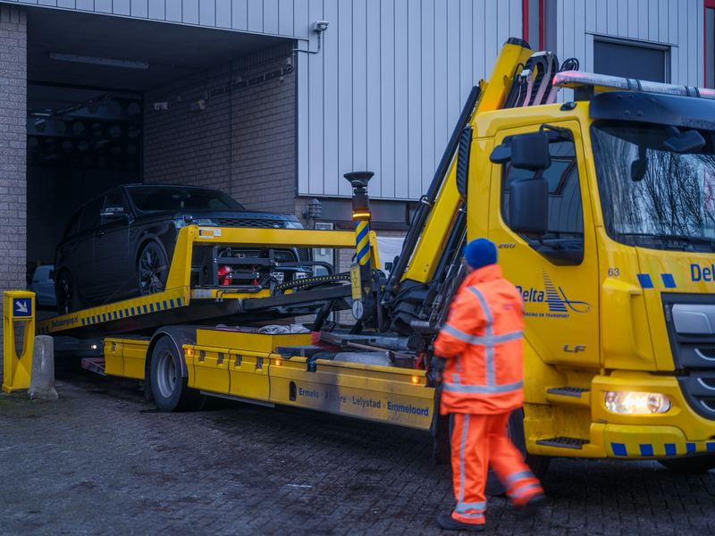
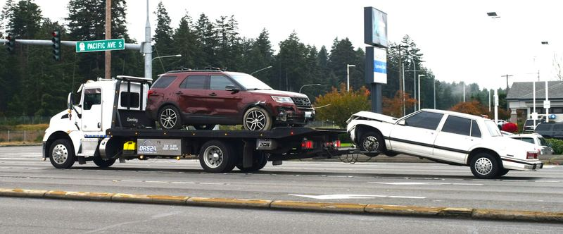
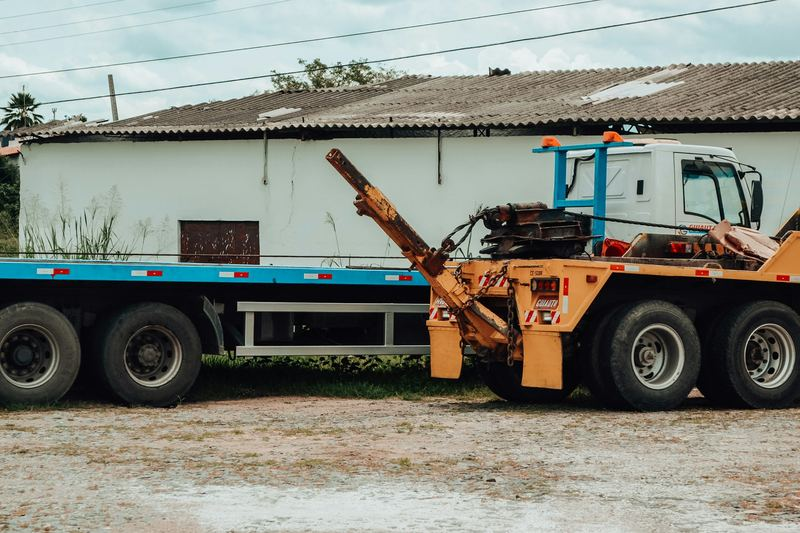

Odtahová služba
Auto po nehodě nebo s poruchou naložíme na plošinu a odvezeme do servisu, domů nebo kam potřebujete.

Když auto nejede
Zavolejte, řekněte, kde stojíte a co se stalo. Domluvíme, kam auto odvezeme. Nejbližší servis máme rovnou u nás.
- ZavoláteKde stojíte a co se stalo.
- PřijedemeAuto naložíme na plošinu.
- OdvezemeDo servisu, domů nebo jinam.
- OpravímeKdyž chcete, rovnou u nás.


„Naprostá spokojenost, 100% služby.“
hodnocení na Firmy.cz
Časté otázky
Odvezete i auto po nehodě?
Ano, auto po nehodě naložíme a odvezeme.
Kam auto odvezete?
Kam se domluvíme: do našeho servisu, k Vám domů nebo do jiného servisu.